Candidate List 20260226 Previous Day Next Day Section 1: New Sources (age<1d) Cosmological Afterglow
Section 2: Old (1-5d) sources observed last night placeholder
Section 1: New Afterglow/FBOT Cands Last Night (1)
1. ZTF26aailtsh (Afterglow?) [Back to Top] [Share] [Trigger Swift] [Fritz ] [Lasair ]RA, Dec: 233.70494, -6.1589 15h34m49.19s, -6d-9m-32.04sGalactic (l, b): 358.94181, 38.34888 ext(g-r) = 0.129 Consistent with synchrotron, g-r>0!
Section 2: Older Sources Observed Last Night (35)
0. ZTF26aahboup (Afterglow?FBOT?) [Back to Top] [Share] [Trigger Swift] [Fritz ] [Lasair ]RA, Dec: 133.84832, 39.42391 8h55m23.60s, 39d25m26.08sGalactic (l, b): 182.83427, 40.05641 ext(g-r) = 0.025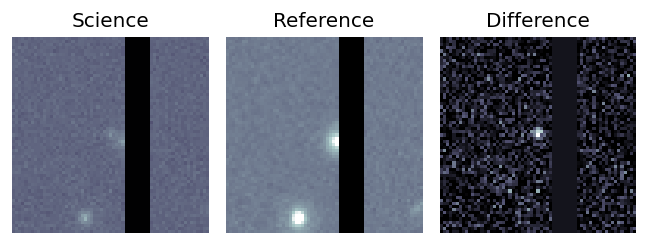LegacySurvey: 1 sources in 3 arcsec Closest: d = 2.24 arcsec, 260.8 deg (east of north) photoz=0.15 (68% bounds 0.04, 0.4), type=EXP peak abs mag = -19.85 (68% bounds -16.81, -22.24) Consistent with synchrotron, g-r>0!
1. ZTF26aahchhg (Afterglow?FBOT?) [Back to Top] [Share] [Trigger Swift] [Fritz ] [Lasair ]RA, Dec: 167.5571, 53.98591 11h10m13.70s, 53d59m9.26sGalactic (l, b): 150.6893, 57.34437 ext(g-r) = 0.01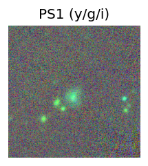 peak abs mag = -19.92 LegacySurvey: 1 sources in 3 arcsec Closest: d = 1.41 arcsec, 280.2 deg (east of north) photoz=0.88 (68% bounds 0.43, 1.27), type=REX peak abs mag = -25.04 (68% bounds -23.16, -26.02)
2. ZTF26aahcufr (Afterglow?FBOT?) [Back to Top] [Share] [Trigger Swift] [Fritz ] [Lasair ]RA, Dec: 200.8118, 80.23543 13h23m14.83s, 80d14m7.55sGalactic (l, b): 121.25298, 36.7889 ext(g-r) = 0.034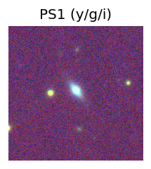 LegacySurvey: 1 sources in 3 arcsec Closest: d = 0.98 arcsec, 19.1 deg (east of north) photoz=0.1 (68% bounds 0.09, 0.11), type=SER peak abs mag = -19.69 (68% bounds -19.51, -19.84) Consistent with synchrotron, g-r>0!
3. ZTF26aahcvha (Afterglow?) [Back to Top] [Share] [Trigger Swift] [Fritz ] [Lasair ]RA, Dec: 251.9872, -2.41064 16h47m56.93s, -2d-24m-38.31sGalactic (l, b): 15.3822, 25.91853 ext(g-r) = 0.218
4. ZTF26aahfrag (Afterglow?) [Back to Top] [Share] [Trigger Swift] [Fritz ] [Lasair ]RA, Dec: 138.9809, 10.13588 9h15m55.42s, 10d 8m9.15sGalactic (l, b): 220.66543, 36.6342 ext(g-r) = 0.06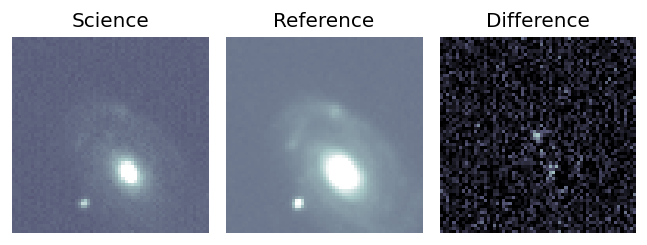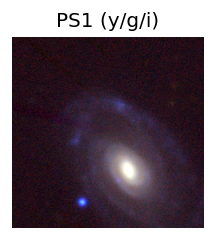 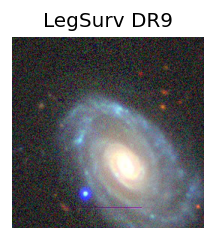 LegacySurvey: 1 sources in 3 arcsec Closest: d = 7.88 arcsec, 12.2 deg (east of north) photoz=0.69 (68% bounds 0.19, 1.32), type=PSF peak abs mag = -24.46 (68% bounds -21.21, -26.19) Consistent with synchrotron, g-r>0!
5. ZTF26aahgbbn (Afterglow?FBOT?) [Back to Top] [Share] [Trigger Swift] [Fritz ] [Lasair ]RA, Dec: 151.32246, 22.39842 10h 5m17.39s, 22d23m54.31sGalactic (l, b): 210.73127, 52.15486 ext(g-r) = 0.044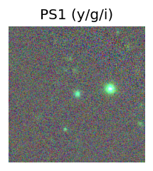 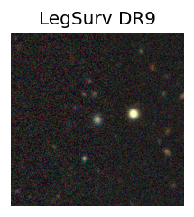 peak abs mag = -21.47 LegacySurvey: 1 sources in 3 arcsec Closest: d = 0.14 arcsec, 187.7 deg (east of north) photoz=0.23 (68% bounds 0.14, 0.29), type=REX peak abs mag = -22.07 (68% bounds -20.9, -22.67)
6. ZTF26aahghbt (FBOT?) [Back to Top] [Share] [Trigger Swift] [Fritz ] [Lasair ]RA, Dec: 126.50531, -13.05671 8h26m1.27s, -13d-3m-24.15sGalactic (l, b): 235.95566, 14.16504 ext(g-r) = 0.057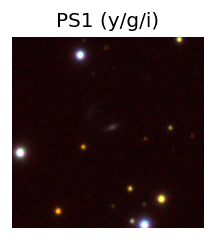 PS1: 1 source in 3 arcsec Closest: d = 1.60 arcsec photoz=0.13+/-0.03 peak abs mag = -19.74 Consistent with synchrotron, g-r>0!
7. ZTF26aahgjws (FBOT?) [Back to Top] [Share] [Trigger Swift] [Fritz ] [Lasair ]RA, Dec: 125.39845, -6.00956 8h21m35.63s, -6d 0m-34.41sGalactic (l, b): 229.1399, 16.94953 ext(g-r) = 0.052LegacySurvey: 1 sources in 3 arcsec Closest: d = 1.45 arcsec, 255.0 deg (east of north) photoz=0.5 (68% bounds 0.3, 0.9), type=REX peak abs mag = -23.03 (68% bounds -21.72, -24.56) Consistent with synchrotron, g-r>0!
8. ZTF26aahigll (FBOT?) [Back to Top] [Share] [Trigger Swift] [Fritz ] [Lasair ]RA, Dec: 186.08675, 2.6073 12h24m20.82s, 2d36m26.26sGalactic (l, b): 286.96871, 64.6361 WARNING: 4.81 deg from ecliptic plane ext(g-r) = 0.02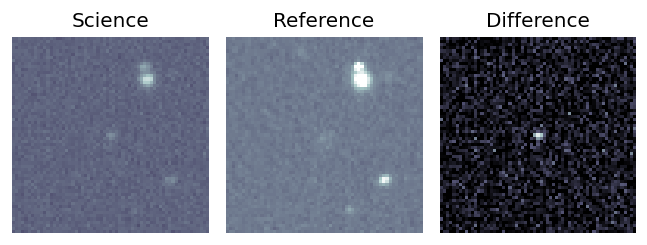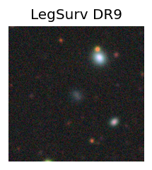 peak abs mag = -24.09 LegacySurvey: 1 sources in 3 arcsec Closest: d = 1.04 arcsec, 197.1 deg (east of north) photoz=0.15 (68% bounds 0.08, 0.22), type=EXP peak abs mag = -20.49 (68% bounds -19.09, -21.42)
9. ZTF26aahigro (Afterglow?) [Back to Top] [Share] [Trigger Swift] [Fritz ] [Lasair ]RA, Dec: 178.42048, 5.62578 11h53m40.91s, 5d37m32.82sGalactic (l, b): 267.7653, 64.47877 WARNING: 4.53 deg from ecliptic plane ext(g-r) = 0.017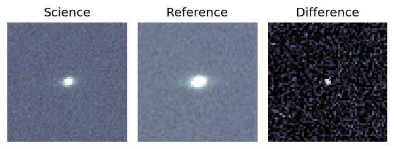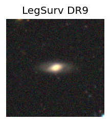 LegacySurvey: 1 sources in 3 arcsec Closest: d = 0.49 arcsec, 279.8 deg (east of north) photoz=0.09 (68% bounds 0.08, 0.1), type=SER peak abs mag = -18.8 (68% bounds -18.58, -18.99) Consistent with synchrotron, g-r>0!
10. ZTF26aahixfn (FBOT?) [Back to Top] [Share] [Trigger Swift] [Fritz ] [Lasair ]RA, Dec: 172.7169, 20.28023 11h30m52.06s, 20d16m48.84sGalactic (l, b): 229.00642, 70.35733 ext(g-r) = 0.023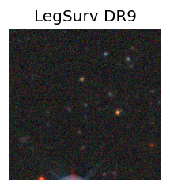 LegacySurvey: 1 sources in 3 arcsec Closest: d = 0.19 arcsec, 226.9 deg (east of north) photoz=0.76 (68% bounds 0.48, 1.05), type=REX peak abs mag = -24.11 (68% bounds -22.88, -24.95)
11. ZTF26aahjdpb (FBOT?) [Back to Top] [Share] [Trigger Swift] [Fritz ] [Lasair ]RA, Dec: 174.75084, -5.71504 11h39m0.20s, -5d-42m-54.14sGalactic (l, b): 272.18317, 52.77765 ext(g-r) = 0.045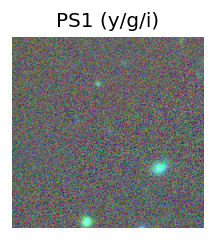 LegacySurvey: 1 sources in 3 arcsec Closest: d = 0.27 arcsec, 204.6 deg (east of north) photoz=0.47 (68% bounds 0.27, 0.63), type=REX peak abs mag = -23.82 (68% bounds -22.44, -24.59)
12. ZTF26aahjfoj (Afterglow?) [Back to Top] [Share] [Trigger Swift] [Fritz ] [Lasair ]RA, Dec: 174.171, 31.2375 11h36m41.04s, 31d14m15.01sGalactic (l, b): 194.32928, 73.19759 ext(g-r) = 0.024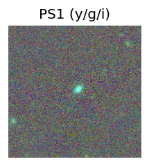 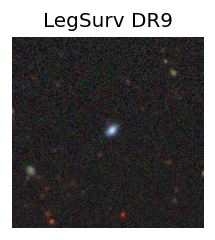 peak abs mag = -19.45 LegacySurvey: 1 sources in 3 arcsec Closest: d = 1.65 arcsec, 292.6 deg (east of north) photoz=0.1 (68% bounds 0.07, 0.13), type=SER peak abs mag = -18.6 (68% bounds -17.86, -19.14) Consistent with synchrotron, g-r>0!
13. ZTF26aahjltp (FBOT?) [Back to Top] [Share] [Trigger Swift] [Fritz ] [Lasair ]RA, Dec: 186.49313, 11.91944 12h25m58.35s, 11d55m9.97sGalactic (l, b): 280.24939, 73.65939 ext(g-r) = 0.028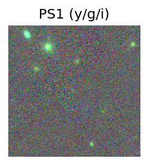 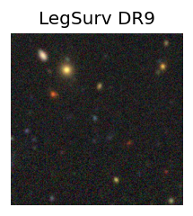 peak abs mag = -21.76 LegacySurvey: 1 sources in 3 arcsec Closest: d = 0.84 arcsec, 71.5 deg (east of north) photoz=0.44 (68% bounds 0.25, 0.6), type=EXP peak abs mag = -21.08 (68% bounds -19.71, -21.91)
14. ZTF26aahjmpm (Afterglow?) [Back to Top] [Share] [Trigger Swift] [Fritz ] [Lasair ]RA, Dec: 155.09303, 35.99365 10h20m22.33s, 35d59m37.14sGalactic (l, b): 187.90008, 56.84642 ext(g-r) = 0.01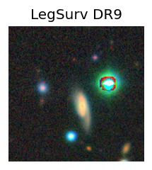 LegacySurvey: 1 sources in 3 arcsec Closest: d = 7.02 arcsec, 206.3 deg (east of north) photoz=0.1 (68% bounds 0.09, 0.12), type=SER peak abs mag = -18.82 (68% bounds -18.45, -19.14) Consistent with synchrotron, g-r>0!
15. ZTF26aahjpbx (FBOT?) [Back to Top] [Share] [Trigger Swift] [Fritz ] [Lasair ]RA, Dec: 187.70773, 8.27395 12h30m49.86s, 8d16m26.23sGalactic (l, b): 287.47436, 70.52476 ext(g-r) = 0.023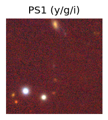 peak abs mag = -20.82 LegacySurvey: 1 sources in 3 arcsec Closest: d = 0.41 arcsec, 151.4 deg (east of north) photoz=0.27 (68% bounds 0.2, 0.39), type=REX peak abs mag = -20.55 (68% bounds -19.79, -21.41)
16. ZTF26aahjslj (Afterglow?) [Back to Top] [Share] [Trigger Swift] [Fritz ] [Lasair ]RA, Dec: 185.38042, 12.51988 12h21m31.30s, 12d31m11.57sGalactic (l, b): 275.84219, 73.79735 ext(g-r) = 0.043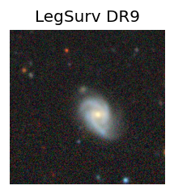 LegacySurvey: 1 sources in 3 arcsec Closest: d = 5.99 arcsec, 230.2 deg (east of north) photoz=0.06 (68% bounds 0.05, 0.06), type=SER peak abs mag = -18.05 (68% bounds -17.7, -18.33) Consistent with synchrotron, g-r>0!
17. ZTF26aahjucx (FBOT?) [Back to Top] [Share] [Trigger Swift] [Fritz ] [Lasair ]RA, Dec: 193.85532, 19.22495 12h55m25.28s, 19d13m29.82sGalactic (l, b): 309.74108, 82.04398 ext(g-r) = 0.02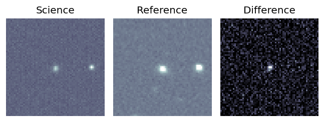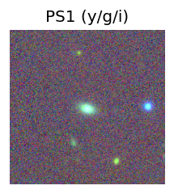 peak abs mag = -19.74 LegacySurvey: 1 sources in 3 arcsec Closest: d = 1.05 arcsec, 167.1 deg (east of north) photoz=0.1 (68% bounds 0.08, 0.12), type=SER peak abs mag = -19.37 (68% bounds -18.92, -19.72) Consistent with synchrotron, g-r>0!
18. ZTF26aahknrg (Afterglow?) [Back to Top] [Share] [Trigger Swift] [Fritz ] [Lasair ]RA, Dec: 243.08658, 3.41895 16h12m20.78s, 3d25m8.22sGalactic (l, b): 15.68933, 36.5516 ext(g-r) = 0.064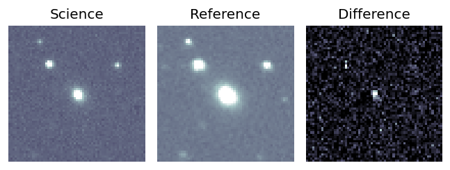
19. ZTF26aahnjfz (Afterglow?) [Back to Top] [Share] [Trigger Swift] [Fritz ] [Lasair ]RA, Dec: 121.83842, 15.43087 8h 7m21.22s, 15d25m51.12sGalactic (l, b): 207.05339, 23.59911 WARNING: -4.68 deg from ecliptic plane ext(g-r) = 0.029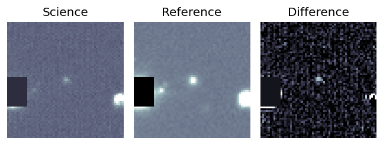LegacySurvey: 1 sources in 3 arcsec Closest: d = 0.73 arcsec, 226.1 deg (east of north) photoz=0.1 (68% bounds 0.09, 0.11), type=SER peak abs mag = -18.98 (68% bounds -18.76, -19.23) Consistent with synchrotron, g-r>0!
20. ZTF26aahpkqy (FBOT?) [Back to Top] [Share] [Trigger Swift] [Fritz ] [Lasair ]RA, Dec: 169.76846, 0.87315 11h19m4.43s, 0d52m23.35sGalactic (l, b): 258.91502, 55.64312 WARNING: -3.25 deg from ecliptic plane ext(g-r) = 0.034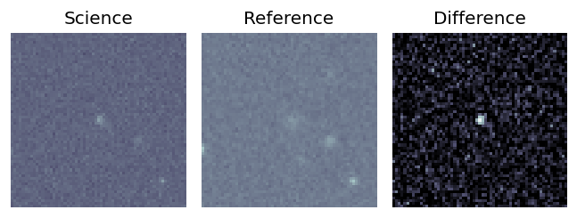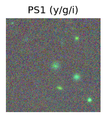 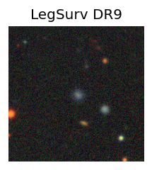 peak abs mag = -18.90 LegacySurvey: 1 sources in 3 arcsec Closest: d = 1.37 arcsec, 230.4 deg (east of north) photoz=0.12 (68% bounds 0.1, 0.15), type=REX peak abs mag = -19.57 (68% bounds -19.02, -20.09) Consistent with synchrotron, g-r>0!
21. ZTF26aahpovy (Afterglow?) [Back to Top] [Share] [Trigger Swift] [Fritz ] [Lasair ]RA, Dec: 106.79155, -1.96131 7h 7m9.97s, -1d-57m-40.71sGalactic (l, b): 216.47353, 2.60144 ext(g-r) = 0.44
22. ZTF26aahqsvy (Afterglow?FBOT?) [Back to Top] [Share] [Trigger Swift] [Fritz ] [Lasair ]RA, Dec: 203.11577, 8.72716 13h32m27.78s, 8d43m37.77sGalactic (l, b): 332.63817, 69.19806 ext(g-r) = 0.027peak abs mag = -21.46 LegacySurvey: 1 sources in 3 arcsec Closest: d = 0.48 arcsec, 236.3 deg (east of north) photoz=0.15 (68% bounds 0.09, 0.27), type=REX peak abs mag = -19.28 (68% bounds -18.22, -20.75) Consistent with synchrotron, g-r>0!
23. ZTF26aahquyi (FBOT?) [Back to Top] [Share] [Trigger Swift] [Fritz ] [Lasair ]RA, Dec: 180.31409, 22.68537 12h 1m15.38s, 22d41m7.34sGalactic (l, b): 231.52565, 77.79294 ext(g-r) = 0.034peak abs mag = -18.43 LegacySurvey: 1 sources in 3 arcsec Closest: d = 0.49 arcsec, 264.0 deg (east of north) photoz=0.79 (68% bounds 0.51, 1.11), type=PSF peak abs mag = -23.81 (68% bounds -22.68, -24.73)
24. ZTF26aahslge (Afterglow?) [Back to Top] [Share] [Trigger Swift] [Fritz ] [Lasair ]RA, Dec: 162.84789, 11.30591 10h51m23.49s, 11d18m21.28sGalactic (l, b): 236.37723, 57.68282 WARNING: 3.72 deg from ecliptic plane ext(g-r) = 0.028LegacySurvey: 1 sources in 3 arcsec Closest: d = 6.37 arcsec, 309.1 deg (east of north) photoz=0.89 (68% bounds 0.51, 1.47), type=REX peak abs mag = -24.45 (68% bounds -22.96, -25.78)
25. ZTF26aahvwcf (Afterglow?) [Back to Top] [Share] [Trigger Swift] [Fritz ] [Lasair ]RA, Dec: 284.30971, -10.89513 18h57m14.33s, -10d-53m-42.48sGalactic (l, b): 23.85186, -6.2176 ext(g-r) = 0.472
26. ZTF26aahyyny (FBOT?) [Back to Top] [Share] [Trigger Swift] [Fritz ] [Lasair ]RA, Dec: 120.84859, 8.29048 8h 3m23.66s, 8d17m25.73sGalactic (l, b): 213.60298, 19.73908 ext(g-r) = 0.019peak abs mag = -19.96 LegacySurvey: 1 sources in 3 arcsec Closest: d = 0.69 arcsec, 328.1 deg (east of north) photoz=0.19 (68% bounds 0.15, 0.23), type=REX peak abs mag = -20.89 (68% bounds -20.28, -21.33)
27. ZTF26aaibaza (Afterglow?) [Back to Top] [Share] [Trigger Swift] [Fritz ] [Lasair ]RA, Dec: 167.19962, -6.76905 11h 8m47.91s, -6d-46m-8.58sGalactic (l, b): 262.96414, 47.97735 ext(g-r) = 0.045LegacySurvey: 1 sources in 3 arcsec Closest: d = 2.46 arcsec, 351.8 deg (east of north) photoz=0.04 (68% bounds 0.03, 0.04), type=SER peak abs mag = -17.42 (68% bounds -17.06, -17.89) Consistent with synchrotron, g-r>0!
28. ZTF26aaicwuu (FBOT?) [Back to Top] [Share] [Trigger Swift] [Fritz ] [Lasair ]RA, Dec: 174.77423, 23.75924 11h39m5.82s, 23d45m33.27sGalactic (l, b): 220.57913, 73.34124 ext(g-r) = 0.023peak abs mag = -20.06 LegacySurvey: 1 sources in 3 arcsec Closest: d = 0.28 arcsec, 277.9 deg (east of north) photoz=0.11 (68% bounds 0.06, 0.76), type=REX peak abs mag = -18.77 (68% bounds -17.6, -23.64)
29. ZTF26aaiedvz (FBOT?) [Back to Top] [Share] [Trigger Swift] [Fritz ] [Lasair ]RA, Dec: 242.50115, 0.70575 16h10m0.28s, 0d42m20.70sGalactic (l, b): 12.47068, 35.5842 ext(g-r) = 0.155LegacySurvey: 1 sources in 3 arcsec Closest: d = 2.74 arcsec, 297.0 deg (east of north) photoz=0.06 (68% bounds 0.04, 0.08), type=SER peak abs mag = -20.17 (68% bounds -19.08, -20.63)
30. ZTF26aaigpqp (FBOT?) [Back to Top] [Share] [Trigger Swift] [Fritz ] [Lasair ]RA, Dec: 122.07822, 49.76728 8h 8m18.77s, 49d46m2.21sGalactic (l, b): 169.24848, 32.50227 ext(g-r) = 0.051LegacySurvey: 1 sources in 3 arcsec Closest: d = 0.58 arcsec, 179.3 deg (east of north) photoz=0.14 (68% bounds 0.13, 0.15), type=SER peak abs mag = -19.61 (68% bounds -19.4, -19.78)
31. ZTF26aaiicho (FBOT?) [Back to Top] [Share] [Trigger Swift] [Fritz ] [Lasair ]RA, Dec: 172.11599, 14.2327 11h28m27.84s, 14d13m57.70sGalactic (l, b): 242.46803, 66.75945 ext(g-r) = 0.036peak abs mag = -20.82 LegacySurvey: 1 sources in 3 arcsec Closest: d = 0.56 arcsec, 199.2 deg (east of north) photoz=0.09 (68% bounds 0.06, 0.18), type=SER peak abs mag = -18.49 (68% bounds -17.56, -20.05)
32. ZTF26aaikqwp (Afterglow?) [Back to Top] [Share] [Trigger Swift] [Fritz ] [Lasair ]RA, Dec: 161.19451, 58.45799 10h44m46.68s, 58d27m28.75sGalactic (l, b): 149.23878, 51.7096 ext(g-r) = 0.012LegacySurvey: 1 sources in 3 arcsec Closest: d = 5.47 arcsec, 300.9 deg (east of north) photoz=0.02 (68% bounds 0.01, 0.04), type=PSF peak abs mag = -15.36 (68% bounds -13.91, -16.44) Consistent with synchrotron, g-r>0!
33. ZTF26aailjkl (FBOT?) [Back to Top] [Share] [Trigger Swift] [Fritz ] [Lasair ]RA, Dec: 188.97906, 14.38842 12h35m54.97s, 14d23m18.31sGalactic (l, b): 286.305, 76.75647 ext(g-r) = 0.053LegacySurvey: 1 sources in 3 arcsec Closest: d = 0.19 arcsec, 186.3 deg (east of north) photoz=0.96 (68% bounds 0.52, 1.11), type=PSF peak abs mag = -22.87 (68% bounds -21.21, -23.25)
34. ZTF26aailxbg (Afterglow?FBOT?) [Back to Top] [Share] [Trigger Swift] [Fritz ] [Lasair ]RA, Dec: 280.81352, -8.79374 18h43m15.25s, -8d-47m-37.47sGalactic (l, b): 24.17406, -2.19553 ext(g-r) = 1.359PS1: 1 source in 3 arcsec Closest: d = 0.08 arcsec photoz=0.60+/-0.01 peak abs mag = -28.86 


 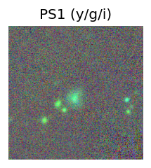
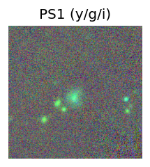
 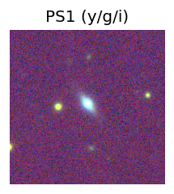
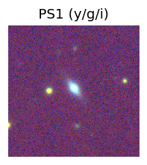


 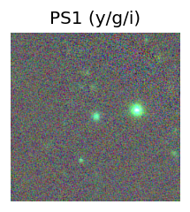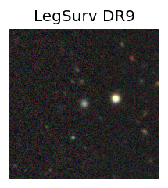
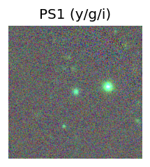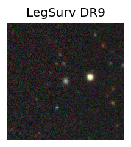 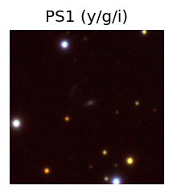
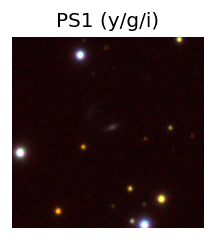


 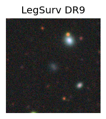
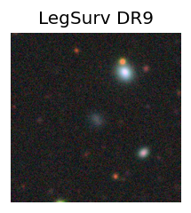 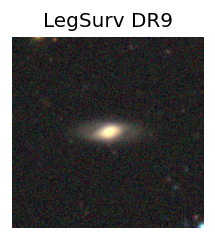
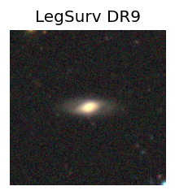
 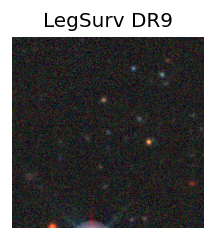
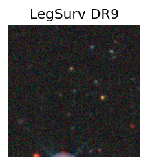 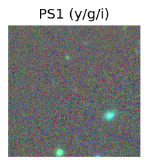
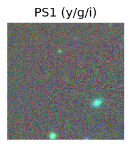
 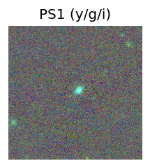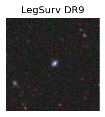
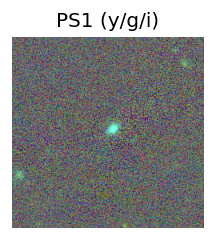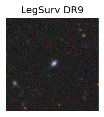 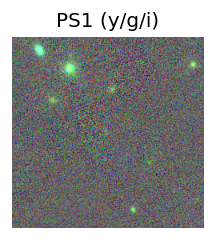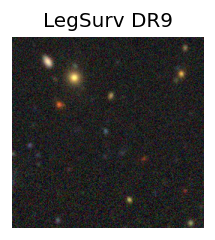
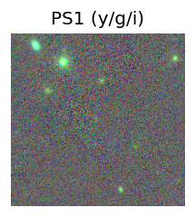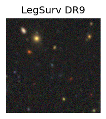
 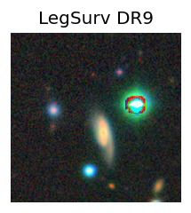
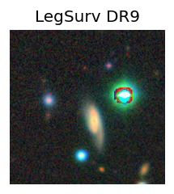 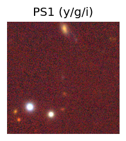
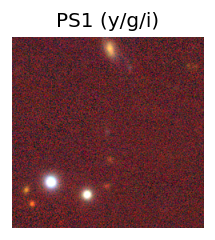

 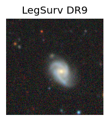
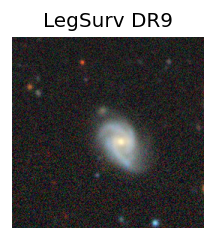